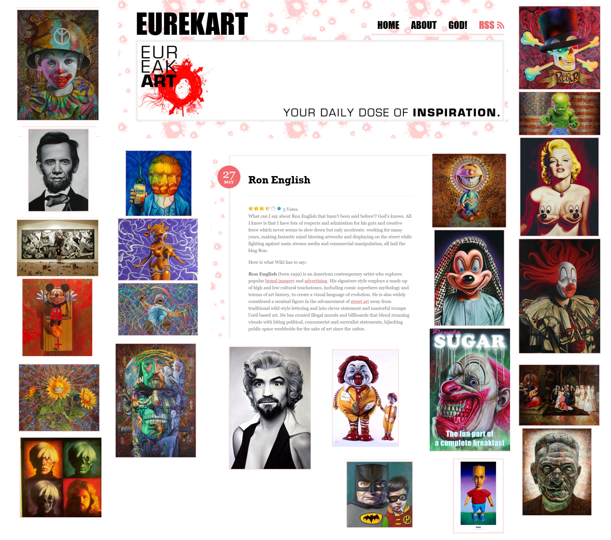
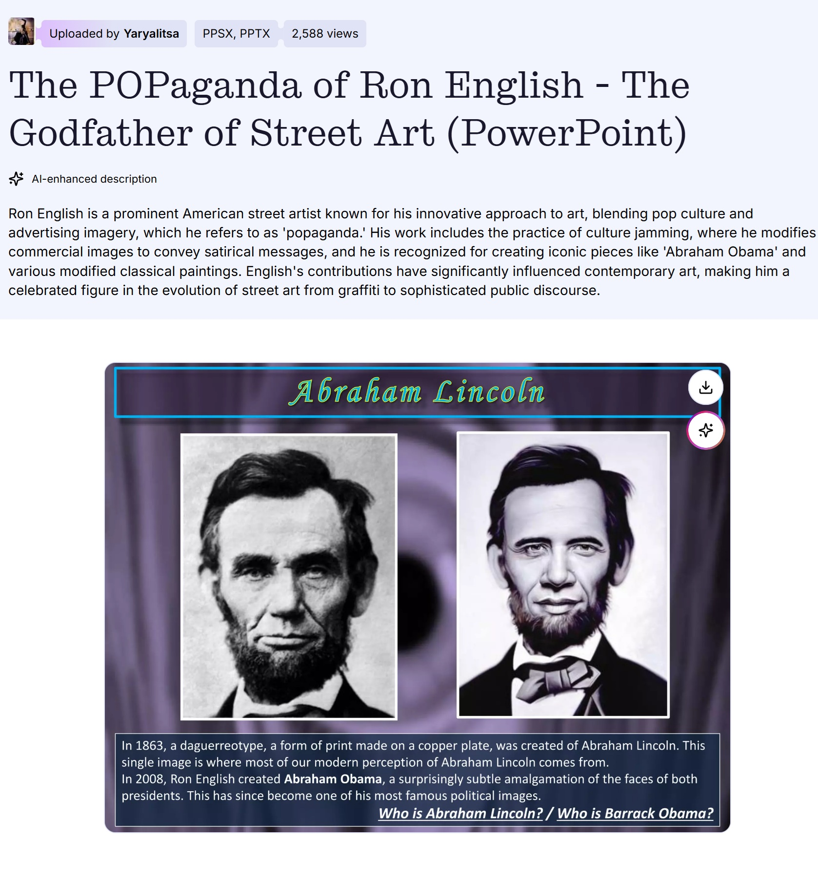

Provenance
Private collection.
Literature
Ron English, Original Grin: The Art of Ron English (Paris: Cernunnos, 2019), p. 131. ISBN 978-2374950938.

Pablo González, “Ron English: el hiperrealista al que McDonald’s odiaba,” MalaTinta Magazine, February 17, 2014. Online: MalaTinta Magazine.

Andrew Handley, “10 Pop Culture Versions Of Famous Paintings,” Listverse, March 2, 2013. Online.
“US artists get Obamania”, Art Newspaper, 2009.

“London: Ron English @ Boxpark”, Butterfly Art News, 2015.

Brian Goslow, “A politic”, artscope - New England's Culture Magazine, July - August 2008.

“London: Ron English @ Boxpark”, Butterfly Art News, 2015.

London Street Art Desing, “Ron English”, LSD Magazine, 2010, p. 89.

By Priscilla Frank, “HuffPost Arts Interviews Ron English”, Huffpost, 1960.

“Ron English”, Groove Guide, 2012, p. 1.

“Ron English”, Groove Guide, 2012, p. 20.

“Ron English”, Adbusters, January -February 2009.

“Reivindicando Nuevos Caminos - Ron English”, Lamono, vol. 91, 2013.

Mural, “Interview with Ron English”, Mural Festiva Blog, no. November, 2018.

Notes
Dimensions reported as correct, based on color-strip documentation.
In Original Grin, this work was erroneously reported as 24 × 36 inches; this catalogue record retains 30 × 40 inches.
Ancillary Documentation



